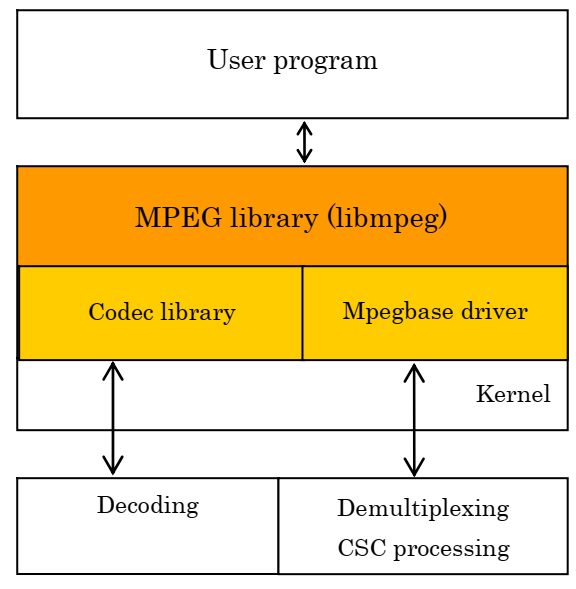

播放视频的可能性？
PSP内置的视频功能
在PSP官方固件中其视频播放功能体现在两处
-
系统内置的视频播放器软件
-
在XMB中显示游戏时播放的短片
前者能读取记忆棒中存储的MP4封装的视频文件，而后者则播放嵌入PBP文件中的pmf(PlayStation Movie Format)视频文件。
二者具体支持的规格如下(可能有误)：
| 封装格式(Container) | 视频分辨率(Resolution) | 视频编码(Codec) | 音频采样率 | 音频编码 | 限制 |
|---|---|---|---|---|---|
| MP4 (MPEG-4 Part 12) | 320 x 240 (QVGA) | MPEG-4 Simple Profile (MPEG-4 Part 2) / H.264 Main Profile / H.264 Baseline Profile | 24000Hz | AAC LC | Non Statanrd Resolution & Bitrate 参见YAPSPD 1 |
| PMF | can be as small as 64x64 pixels | H.264 (MPEG-4 Part 10 AVC) | ATRAC3plus | 64kbps2 |
MPEG-4 Simple Profile 在MPEG-4 Part 2 中定义，不同于 Advanced Simple Profile3，更与H.264无关
依据互联网上存在的部分压制指南及官方文档，似乎最新固件上的视频播放器对分辨率和编码限制并不如此严格
PSvidscript onGithub
ffmpeg -i sample.mp4 c:a aac -c:v libx264 -profile:v main -level:v 3.0 -x264opts ref=3:b-pyramid=none:weightp=1 -r 29.97 -s 320x240 -pix_fmt yuv420p -b:v 768k -ar 48000 -ab 96k
AVC MainProfile CABAC codec
You can play files of the following types on the PSP™ system.
Memory Stick™ Video Format - MPEG-4 Simple Profile (AAC)
- H.264/MPEG-4 AVC Main Profile (CABAC) (AAC) and Baseline Profile (AAC)
MP4 - MPEG-4 Simple Profile (AAC)
- H.264/MPEG-4 AVC Main Profile (CABAC) (AAC) and Baseline Profile (AAC)
AVI - Motion JPEG (Linear PCM)
- Motion JPEG (μ-Law)
不论如何，这至少证明了PSP能通过硬件加速解码的视频编码至少包括MPEG-4 SP和H.264 Main Profile
PSP 内置的 libMpeg 与 libVideocodec 有多大能力?
性能如何？能解码何种视频流？ + libmpeg(pspmpeg) + Codec Library(pspvideocodec) + Mpegbase Library(pspmpegbase) 
前人的努力
-
PMP(PSP Media Player)(2005 JiniCho) ->PMP MOD(jonny) -
使用FFmpeg进行视频解封装及解码
-
pmfplayer/pmfplayer-lib(2006 magiK) -
使用PSP内部库解封装
pmf及解码H.264 -
PMP MOD AVC(2006 jonny) /PMPlayer Advanced(PPA)(2011 cooleyes) -
综合使用二者进行解码
- 我想
PPA应该是绝响了，据称支持OFW 6.60
有些感慨，以前的人们代码交流全靠在论坛发临时的网盘链接，如今工作流已然大大改善。
libmpeg
libmpeg is a library that can be used for demultiplexing a PSP™ Movie Format (for game) stream (hereafter, PSMF stream), and decoding the demultiplexed video and audio streams.
access unit: A set of NAL units that are consecutive in decoding order and contain exactly one primary coded picture. In addition to the primary coded picture, an access unit may also contain one or more redundant coded pictures, one auxiliary coded picture, or other NAL units not containing slices or slice data partitions of a coded picture. The decoding of an access unit always results in a decoded picture.
FFmpeg
在Github上存在着利用了少量PSP汇编代码优化的的FFmpeg 0.5实现（ffmpeg-psp），目前尚不清楚其优化程度，而API亦过于老旧。
+ 解码速度实际上相当快，至少肉眼上比2023年构建的版本快不少。（下一步要实测！）
+ 感觉速度还是限制在了swscale和SDL的渲染上。
+ 查一下FFmpeg Release，大约是2010年的版本。
不显示估计有22fps.
让我们从FFmpeg开始吧，重走近20年前人们走过的老路。不过FFmpeg至今未断，也可以说是如今最好走的路吧。
致敬雷神。
Build FFmpeg from source
不论是FFmpeg-psp还是如今每日构建的ffmpeg，想要取出其特定功能我们还得手动构建
- 协助控制编译的./configure 文件（修改让他支持我的psp参数：也就是什么都不做，因为不支持平台-specific的code）
- 支持什么，参数怎么改？
- disable/enable
- install的位置
- cross-compile
-
我们需要的库
libav? -
没有硬解行不行？
-
目前版本号显示可以做到
- 文件读取/解封装成功
- 解码成功
- 缩放成功
- [] 帧率如何？
- [] 音频播放
- [] 音视频同步
Demuxing
我想这个工作就交给FFmpeg吧，毕竟格式确实变化万千。
Decoding
使用PSP内置ME有无可能？依据PMP AVC似乎可以考虑MElib.
Rendering
使用SDL？
FFPlay
FFPlay是一个单文件的播放器示例。具有极高的参考价值。尤其对于如何使用老旧API而言。 FFmpeg是个历史文档清晰可查询的大项目。这一点还是十分令人感动。 可惜的是SDL2的API亦在急剧变化。 想要把这两者正确融合还是很难啊！ 不过SDL一代二代均有PSP版本。考古也是有很大成功机会的！ 鄙人已经绷不住了，还是用GUI先测试一波吧！
Audio Playback
太狗了，旧版FFmpeg不支持SBR？？
音频
ID : 2
格式 : AAC LC SBR
格式/信息 : Advanced Audio Codec Low Complexity with Spectral Band Replication
传播名 : HE-AAC
格式设置 : NBC
编解码器 ID : mp4a-40-5
时长 : 21 分 36 秒
Duration_LastFrame : -1 毫秒
码率模式 : 恒定码率 (CBR)
码率 : 48.0 kb/s
声道数 : 2 声道
声道布局 : L R
采样率 : 48.0 kHz
帧率 : 23.438 FPS (2048 SPF)
压缩模式 : 有损
流大小 : 7.17 MiB (22%)
Default : 是
组别 : 1
参考了FFplay和其他教程。然而实机播放极为卡顿。仅播放音频都不行。加上视频解码更是无比缓慢。十分伤心，感觉暂时是无望了。
参考资料
Video Limitation Resolution: 320 x 240 (QVGA), Nonstandard resolutions can be used but are still limited to the 76,800 pixel resolution of QVGA.
Codec: MPEG-4 SP (Simple Profile), which has different headers than the more common MPEG-4 formats.
Audio Limitation Codec: AAC Sampling Rate: 24000hz Bitrate Limitation: 1-768kb/s & 1500kb/s.
Any combination of video and audio bitrate that is equal to or less than 768kb/s is acceptable (i.e. 640kb/s video + 128kb/s audio = 768kb/s total, or 300kb/s video + 32kb/s audio = 332kb/s total). The PSP also supports a bitrate of 1500kb/s, but no bitrates inbetween 768kb/s and 1500kb/s.
note: ffmpeg can create PSP compatible mpeg4 files using the '3gp' profile
PMP Mod AVC by jonny
Homepage: http://jonny.leffe.dnsalias.com
E-mail: jonny@leffe.dnsalias.com
PMP Mod uses libavcodec from FFMPEG (http://ffmpeg.sourceforge.net/)
Many thanks goes to:
- magiK (PMF Player author) for unlocking the avc api and
x264 compatibility, great work
- FFMPEG developers
- JiniCho (PMP Mod is a modified version of his original FFMPEG and
FFPLAY psp port)
- ps2dev.org developers and users
- malloc/Raphael for the nice "modmod" version :)
- Swede (http://www.doom9.org/), my super webspace provider
- argandona & all the others helping with the icon/bg
Bilibili:
视频
ID : 1
格式 : AVC
格式/信息 : Advanced Video Codec
格式配置 (Profile) : High@L5.1
格式设置 : CABAC / 4 Ref Frames
格式设置, CABAC : 是
格式设置, 参考帧 : 4 帧
编解码器 ID : avc1
编解码器 ID/信息 : Advanced Video Coding